, has
, has  with
with  ; lossless:
; lossless:  ,
, Statement and derivation
From the Helmholtz equation
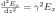
,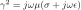
(Hertz 1889). Faraday gives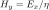
.| medium | condition | α | β | η |
|---|---|---|---|---|
| lossless | σ = 0 | 0 | ω√(με) | √(μ/ε) |
| low-loss | σ ≪ ωε | (σ/2)√(μ/ε) | ω√(με) | √(μ/ε) |
| good conductor | σ ≫ ωε | √(πfμσ) | √(πfμσ) | (1+j)√(πfμ/σ) |
Phase velocity
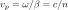
,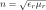
; wavelength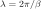
.Polarisation
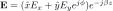
: linear (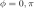
), circular (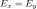
,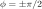
), elliptical otherwise. Handedness by IEEE convention: viewed from behind the wave, counter-clockwise rotation is right-hand circular.Skin effect
In a good conductor fields decay as
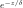
and the current flows in a layer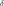
; the AC resistance of a wire of radius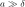
is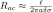
, surface resistance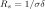
.Worked example
Copper (
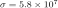
S/m):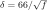
mm → 9.3 mm at 50 Hz, 66 µm at 1 MHz, 2.1 µm at 1 GHz. Sea water at 1 kHz (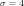
):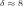
m — submarine communication uses VLF/ELF. A 1 GHz wave in a dielectric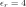
: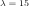
cm,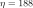
Ω.Engineering applications
Shielding effectiveness (absorption
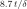
dB), litz wire and PCB conductor loss at GHz, microwave heating (loss tangent of water), ground-penetrating radar depth, polarisation diversity in antennas and the polarisation optics of optoelectronics.Pitfall
In a lossy medium  and
and
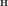
are not in phase ( complex, 45° for good conductors); power must be computed with
complex, 45° for good conductors); power must be computed with 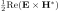
, not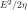
with complex.